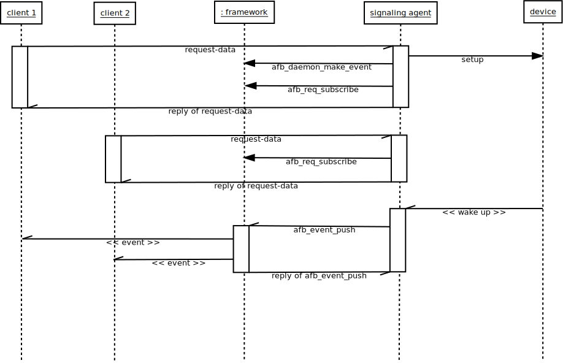

Guide for developing with events
Signaling agents are services that send events to any clients that are subscribed to receive it. The sent events carry any data.
To have a good understanding of how to:
- write a signaling agent.
- actions of subscribing.
- actions of unsubscribing.
- actions of producing.
- actions of sending and receiving.
Events must be described and explained.
Overview of events
The basis of a signaling agent is shown in the following figure:

This figure shows the main role of the signaling framework for the events propagation.
For people not familiar with the framework, a signaling agent and a “binding” are similar.
Subscribing and unsubscribing
- Subscribing is the action that makes a client able to receive data from a signaling agent.
Subscription must :
- Create resources for generating the data.
- Deliver the data to the client.
These two aspects are not handled by the same piece of software.
- Generating the data is the responsibility of the developer of the signaling agent
- Delivering the data is handled by the framework.
When a client subscribes for data, the agent must:
- Check that the subscription request is correct.
- Establish the computation chain of the required data (if not already done).
- Create a named event for the computed data (if not already done).
- Ask the framework to establish the subscription to the event for the request.
- Optionally give indications about the event in the reply to the client.
The first two steps do not involve the framework. They are linked to the business logic of the binding. The request can be any description of the requested data and the computing stream can be of any nature, this is specific to the binding.
As said before, the framework uses and integrates libsystemd and its event loop. Within the framework, libsystemd is the standard API/library for bindings expecting to setup and handle I/O, timer or signal events.
Steps 3 and 4 are bound to the framework.
The agent must create an object for handling the propagation of produced data to its clients. That object is called “event” in the framework. An event has a name that allows clients to distinguish it from other events.
Events are created using the afb_api_make_event function that takes the api that creates the event and the name of the event. Example:
event = afb_api_make_event(api, name);
Once created, the event can be used either to push data to its subscribers or to broadcast data to any listener.
The event must be used to establish the subscription for the requesting client. This is done using the afb_req_subscribe function that takes the current request object and event and associates them together. Example:
rc = afb_req_subscribe(req, event);
When successful, this function make the connection between the event and the client that emitted the request. The client becomes a subscriber of the event until it unsubscribes or disconnects. The afb_req_subscribe function will fail:
- if the client connection is weak.
- if the request comes from a HTTP link.
To receive signals, the client must be connected.
The AGL framework allows connections using WebSocket.
The name of the event is either a well known name or an ad hoc name forged for the use case.
Let’s see a basic example:
- client A expects to receive the speed in km/h every second.
- client B expects the speed in mph twice a second.
In that case, there are two different events because it is not the same unit and it is not the same frequency. Having two different events allows to associate clients to the correct event. But this doesn’t tell any word about the name of these events. The designer of the signaling agent has two options for naming:
- names can be the same (“speed” for example) with sent data self describing itself or having a specific tag (requiring from clients awareness about requesting both kinds of speed isn’t safe).
- names of the event include the variations (by example: “speed-km/h-1Hz” and “speed-mph-2Hz”) and, in that case, sent data can self describe itself or not.
In both cases, the signaling agent might have to send the name of the event and/or an associated tag to its client in the reply of the subscription. This is part of the step 5 above.
The framework only uses the event (not its name) for:
- subscription
- un-subscription
- pushing
When the requested data is already generated and the event used for pushing it already exists, the signaling agent must not instantiate a new processing chain and must not create a new event object for pushing data. The signaling agent must reuse the existing chain and event.
Unsubscribing is made by the signaling agent on a request of its client. The afb_req_unsubscribe function tells the framework to remove the requesting client from the event’s list of subscribers. Example:
afb_req_unsubscribe(req, event);
Subscription count does not matter to the framework:
- Subscribing the same client several times has the same effect that subscribing only one time.
Thus, when unsubscribing is invoked, it becomes immediately effective.
More on naming events
- Within the AGL framework, a signaling agent is a binding that has an API prefix.
This prefix is meant to be unique and to identify the binding API. The names of the events that this signaling agent creates are automatically prefixed by the framework, using the API prefix of the binding.
Thus, if a signaling agent of API prefix api creates an event of name event and pushes data to that event, the subscribers will receive an event of name api/event.
Generating and pushing signals and data
- This of the responsibility of the designer of the signaling agent to establish the processing chain for generating events.
In many cases, this can be achieved using I/O or timer or signal events inserted in the main loop. For this case, the AGL framework uses libsystemd and provide a way to integrates to the main loop of this library using afb_api_get_event_loop. Example:
sdev = afb_api_get_event_loop(api);
rc = sd_event_add_io(sdev, &source, fd, EPOLLIN, myfunction, NULL);
In some other cases, the events are coming from D-Bus. In that case, the framework also uses libsystemd internally to access D-Bus. It provides two methods to get the available D-Bus objects, already existing and bound to the main libsystemd event loop. Use either afb_api_get_system_bus or afb_api_get_user_bus to get the required instance. Then use functions of libsystemd to handle D-Bus.
In some rare cases, the generation of the data requires to start a new thread.
When a data is generated and ready to be pushed, the signaling agent should call the function afb_event_push. Example:
rc = afb_event_push(event, JSON);
if (rc == 0) {
stop_generating(event);
afb_event_unref(event);
}
The function afb_event_push pushes json data to all the subscribers. It then returns the count of subscribers. When the count is zero, there is no subscriber listening for the event. The example above shows that in that case, the signaling agent stops to generate data for the event and tells that it doesn’t use it anymore by calling afb_event_unref.
This is one possible option. Other valuable options are:
- do nothing and continue to generate and push the event.
- just stop to generate and push the data but keep the event existing.
Receiving the signals
Understanding what a client expects when it receives signals, events or data shall be the most important topic of the designer of a signaling agent. The good point here is that because JSON[^1] is the exchange format, structured data can be sent in a flexible way.
The good design is to allow as much as possible the client to describe what is needed with the goal to optimize the processing to the requirements only.
The exceptional case of wide broadcast
Some data or events have so much importance that they can be widely broadcasted to alert any listening client. Examples of such an alert are:
- system is entering/leaving “power safe” mode
- system is shutting down
- the car starts/stops moving
- …
An event can be broadcasted using one of the two following methods:
- afb_api_broadcast_event
- afb_event_broadcast
Example 1:
afb_api_broadcast_event(api, name, json);
Example 2:
event = afb_api_make_event(api, name);
. . . .
afb_event_broadcast(event, json);
As for other events, the name of events broadcasted using afb_api_broadcast_event are automatically prefixed by the framework with API prefix.
Reference of functions
See the references for functions of class afb_event
Function onevent (field of afbBindingExport)
Binding can designate an event handling function using the field onevent of the structure afb_binding_t.
This function is called when an event is broadcasted or when an event that the api subscribed to (through call or subcall mechanism) is pushed. That behavior allows a service to react to an event and do what it is to do if this is relevant for it. (ie: car back camera detects imminent collision and broadcast it, then appropriate service enable parking brake.).
Event handlers
The apis functions allow to declare event handling callbacks. These callbacks are called on reception of an event matching a pattern and a receive in more that the event name and its companion JSON data, a user defiend closure and the api that is used to create it.